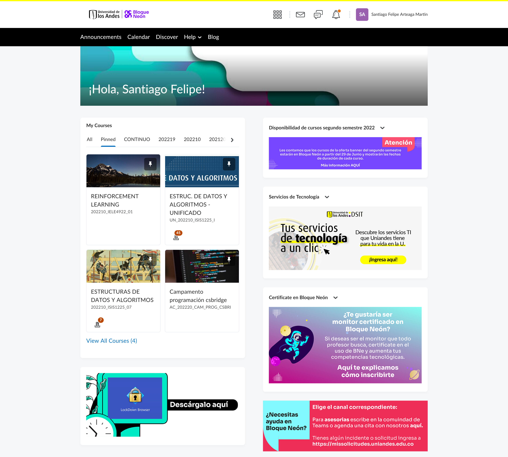

Descripción
El CS Bridge es una colaboración entre la Universidad de Stanford en los Estados Unidos y la Universidad de los Andes en Colombia. Ambas instituciones se unieron para enseñarles a los bachilleres colombianos cómo programar.
- Asumimos que ningún estudiante tiene experiencia previa programando.
- El curso tendrá un programa continuo y regular todos los días (clase magistral, receso, practica, almuerzo, clase magistral, receso, practica).
- diseñamos este curso para que aparte del horario no necesiten otra, el material y computadores serán provistos por Uniandes. Si deciden pasar mas tiempo programando es porque los motiva el tema y porque lo desean hacer, no porque te lo exijamos.
- Se descansará los sábados y domingos.
Esperamos que todos estos componentes les ayuden a tener una gran experiencia en el CS Bridge.
- Se trabajará diariamente en pequeños grupos de a 10 estudiantes con los lideres de sección y los profesores.
- El curso se centra en tareas y proyectos como también en otras actividades para que socialicen y conozcan a sus compañeros de clase y a los profesores.
- Lo mas importante es que te diviertas mucho y al final de tendrás la nueva e increíble habilidad de programar.
- Al terminar el curso recibirás un certificado de asistencia.
Equipo del CS Bridge
El equipo del CS Bridge está conformado por un grandioso equipo académico de dos países: Colombia y los Estados Unidos.
- Los Profesores son personas que actualmente trabajan en alguna de las universidades, los escucharas y sabrás de ellos a lo largo del curso durante las conferencias que se turnarán para exponer.
- Los Lideres de sección son personas entusiastas y divertidas que estudian en la universidad, todos son apasionados por la informática y sirven como ejemplos a seguir. serán asignados a un grupo guiado por cada uno de ellos y a lo largo del curso podrán conocerlo bien.
- Los administradores del programa son esas personas de cada una de las universidades que administran el proceso de inscripción y son el principal punto de contacto entre los estudiantes y sus familias.
Esta es la segunda vez que ofrecemos el CS Bridge en Colombia y la primera vez que lo podemos realizar presencialmente después de mucho tiempo de espera desde 2019. Tendremos la participación de personas de Stanford y de diferentes lugares de Bogotá para que puedan hablar y conocerse.
¡Nuestro objetivo es crear una comunidad de maestros y estudiantes entusiastas que se apoyen mutuamente a medida que todos aprenden esta nueva y emocionante habilidad!
Requisitos del Curso
- Las clases magistrales, clases de práctica, atención a dudas o preguntas y otras actividades sociales serán presenciales dentro del campus de la Universidad de los Andes en Bogotá D.C.
- Utilizaremos las Máquinas Virtuales (MV) y computadores provistos por la universidad para las actividades académicas como los ejercicios prácticos y el proyecto del curso. Los estudiantes NO necesitan llevar su computador personal. Cada estudiante tendrá acceso a su propia maquina virtual durante el desarrollo del curso.
- Todos los estudiantes tendrán acceso Bloque Neón que es una plataforma de la Universidad de los Andes que los ayudará a subir sus tareas y proyectos. Para acceder a la plataforma ir al enlace https://bloqueneon.uniandes.edu.co/d2l/local. Luego, introduce tu usuario y contraseña que serán comunicadas por los líderes de sección.
- Recomendamos llevar papel y lápiz (cuaderno, agenda o similares) para que puedan tomar apuntes durante las clases si así lo desean.
- Utilizaremos PyCharm Development Environment como ambiente de desarrollo interactivo (IDE) para completar los ejercicios del curso. Siga las instrucciones de instalación en el siguiente enlace: http://online.csbridge.org/en/resources/install.html
- Amor por aprender y el interés de conocer otros estudiantes de colegios y nuevas personas
Elementos del Curso
Esperamos que participes completamente en el curso. Debes asistir a todas las actividades del programa para obtener tu certificado.
A. Clases
Las conferencias se llevarán a cabo dos veces al día - habrá una conferencia de 1 hr en la mañana y otra conferencia de 1 hr por la tarde. Las conferencias las dictará un instructor de la Universidad de los Andes o un instructor de la Universidad de Stanford. Aquí es donde aprenderás los conceptos básicos de la clase.
Las conferencias serán Presenciales y el material se publicará en el sitio Web y las actividades se entregarán por medio de BrightSpace Bloque Neón. ¿Qué es Bloque Neón??? ¡Vea la sección de Comunicaciones del Curso a continuación!
B. Receso
This will follow the morning lecture each day.
Cada día después de las conferencias de la mañana y de la tarde habrá un espacio de descanso en donde:
- Tendrás la oportunidad de conocerte, jugar y hablar sobre cosas relacionadas con el curso u otros temas con tus compañeros de grupo y los líderes de sección.
- ¡Imagínate en una fogata tomando jugos, contando historias y conociéndose!
C. Manos a la Obra
Además de las dos conferencias diarias, también asistirás a franjas de "Manos a la obra", o clases prácticas en grupos pequeños con los Líderes de Sección.
- Aquí es donde podrás practicar a través de ejercicios todos los nuevos conceptos que aprendiste en las conferencias.
- Te reunirás con los mismos estudiantes y líder de Sección durante todo el curso.
- Si necesitas ayuda con tu código, podrás pedir ayuda a los lideres de sección, ellos responderán tus preguntas.
- Es posible que tengas que esperar para los lideres de sección te ayuden, recuerda que hay otros estudiantes que pueden necesitar su ayuda.
- Los ejercicios están diseñados para resolverse individualmente, pero los alentamos a que se enseñen y apoyen los unos a los otros, esto puede incluir orientar a sus compañeros hacia la respuesta sin "regalársela" completamente (consulte Aprender con honor).
- Se espera que envíen los resultados de los ejercicios a lo sumo a las 5 p.m. por Bloque Neón.
- Los líderes de sección les darán las instrucciones de dónde encontrar los enunciados de los ejercicios y cómo subir el resultado a Bloque Neón.
D. Foros de Discusión
- Después de clases también puedes escribir preguntas en Bloque Neón (Brightspace), para que los lideres se sección respondan.
E. Proyecto
Habrá un proyecto final que mostrarás a tus compañeros y familiares el día de la graduación.
E. Social Activities
¡Queremos que aprendas mucho en este curso, pero también queremos que te DIVIERTAS y que conozcas a estudiantes de diferentes colegios! ¡También queremos que conozcas a todos los Líderes de Sección y no solo a tu propio Líder de Sección!
- Cada semana habrá una gran actividad social para todos los inscritos en el curso, las organizaremos en diferentes momentos de la semana, así que verifiquen el horario.
- Estas actividades incluyen un tour por la Universidad de los Andes, un panel con invitados externos para descubrir los superpoderes de programación y la ceremonia de graduación. Todos estos eventos hacen parte del programa, ¡así que por favor asistan!
- Nos esforzaremos mucho para que este programa sea memorable y muy divertido. Con suerte, apagarás tu computadora el último día sabiendo que tienes muchos nuevos amigos en diferentes lugares.
Comunicaciones del curso
A. Sitio Oficial
El sitio WEB oficial es: http://online.csbridge.org/
Deben consultar regularmente la página de la clase para obtener los trabajos, tareas, proyecto, anuncios y otra información actualizada sobre el trabajo del curso.
Para obtener más información del como registrarte en Bloque Neón puedes consultar el video [Cómo inicio sesión en Bloque Neón](https://youtu.be/yLxb8gWCkNE).
B. Foros de Discusión
Nuestros foros de discusión estarán en Bloque Neón aquí: https://bloqueneon.uniandes.edu.co/d2l/localbr>
Afuera del campus, toda comunicación acerca de la clase con los docentes y los estudiantes se llevará a cabo en Bloque Neón. Recuerde no compartir información de personal por este medio con nadie en el curso.
Dentro de Bloque Neón se inscribirán en dos grupos de discusión: < / p>
- "CS Bridge": Discusión General.
Aquí es donde puedes publicar las preguntas que tengas (conceptuales, técnicas, etc.) y donde publicaremos anuncios sobre el curso. ¡Por favor, te invitamos a contestar las preguntas de tus compañeros de clase! Pero antes de eso, verifica si otro compañero ya la respondió (y si es así, lee la respuesta a que< / i> publicaron, te puede ayudar!). Es posible que no respondamos preguntas duplicadas.
- Grupo de la Sección de Practica.
Este lugar está hecho específicamente para tu sección. Si necesitas ponerte en contacto con tu líder de sección, puedes hacer una publicación privada (visible solo para el personal) en este grupo. También puede publicar ayudas y respuestas que los otros estudiantes puedan necesitar. Para preguntas más generales no relacionadas con tu sección, usa el grupo principal de CS Bridge en Bloque Neón.

Algunos consejos son:
- Busca tu pregunta o tema antes de publicar.
- Preguntas y respuestas frecuentes e importantes que les resulten útiles.
- Puedes responder preguntas de las que te sientas seguro.
- Comparte contenido interesante relacionado con el curso.
- Para obtener más información sobre Bloque neón puede consultar los videos en [Guía de inicio rápido]( https://youtube.com/playlist?list=PLTf2glwtm8nJHCEhvY0Pib_hU0ggkTU5v).
### Personas de Contacto
La clase se llevará a cabo en el campus de la Universidad de los Andes, por lo que es importante que sepa a quién contactar para qué y cómo para que pueda obtener ayuda de manera oportuna. Utilice la plataforma Ed (Foros de Discusión) donde los líderes de sección y otros estudiantes pueden ayudarlo con aspectos académicos. Algunas pautas para otros temas son:
- En caso de que alguien presente problemas de salud dentro del campus, debe llevarlo al Centro Médico (edificio Franco) para valoración. Recuerda Centro Médico está abierto días hábiles de lunes a viernes y comunicarse al teléfono 6013394949, extensión 000 en caso el problema se presente en días festivos.
- For logistical questions, conceptual and technical questions, or general course conversation, please post a public question on our CS Bridge Ed forum.
- For
personal concerns or issues, please make a private post in the CS Bridge Ed.
- To
send a message to your Section Leader, make a private post in your section’s Ed.
- For
major personal issues or concerns, please contact either Burcu Hanim (Koç) or Mr. Kolar (CTU). Contact information can be found on the CS Bridge Ed in the "General" category [here](https://us.edstem.org/courses/968/discussion/).
### Preguntas Frecuentes
Responderemos sus preguntas a medida que surjan en.
Consulte: http://online.csbridge.org/en/resources/student-faq.html
###
Aprender con honor
Value your own personal integrity -- it is of more importance than anything we learn in this class. We expect every student to engage honestly and fully in the course. Some guidelines:
- We value humanity, intellectual joy, social connection, new skills, and gratitude.
- Teach each other! We are all in this for one another.
- Avoid publicly posting your solution code to assignments on the Ed forums. We want everybody to get a chance to discover their own solution.
- Be welcoming. We are a diverse and wonderful community.
- If you are having trouble with the course or do not understand something that is communicated, please let us know about it so we can help.
Lastly, please be considerate. These are tough times for many, so please help your classmates and teachers out. CS Bridge is a learning experience free of unacceptable behavior. Bullying and other activities that have the potential to harm other participants is not allowed and will not be tolerated. CS Bridge and the community we create is a place all students should feel welcome in.
### Recursos adicionales
#### Acceso al Campus
- Sabemos que nuestra comunidad tendrá una gran diferencia de aprendizaje e incluirá a muchas personas con diferentes capacidades. Si tiene alguna sugerencia sobre cómo podremos mejorar las clases para ustedes, no dudes en publicarlo en Bloque Neón o decirles a los profesores o lideres de sección.
#### Denunciar Conductas Inapropiadas
- Creating and maintaining a safe and open community is of utmost importance to us, and if the actions or behavior of others (students or staff) make you feel unsafe or unwelcome, we want you to let us know. Contact information can be found on the CS Bridge Ed in the "General" category [here](https://bloqueneon.uniandes.edu.co/d2l/le/130727/discussions/topics/33922/View)